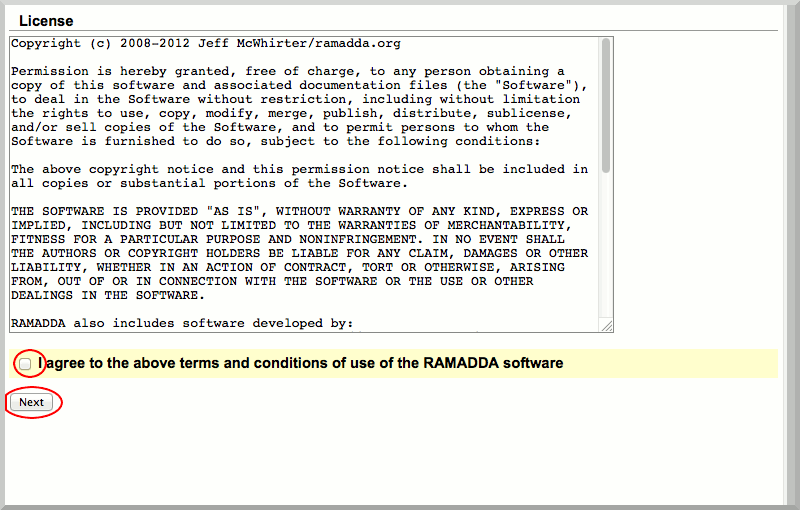
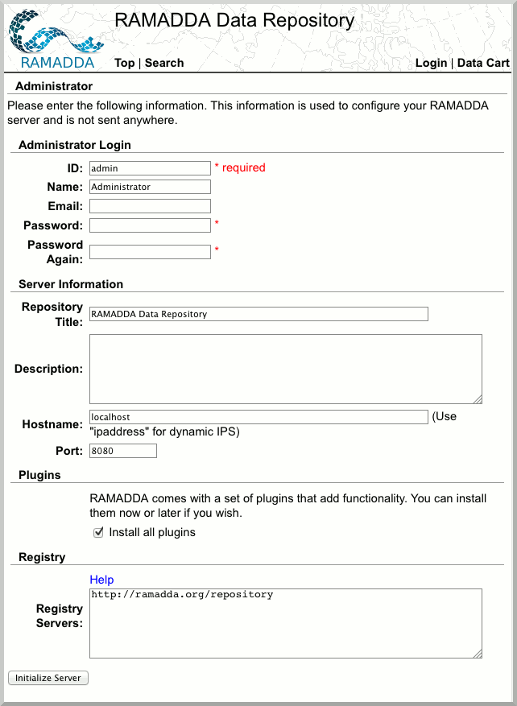
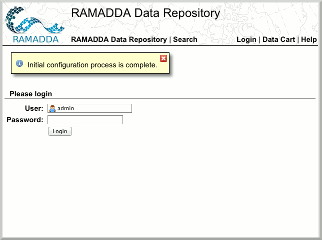
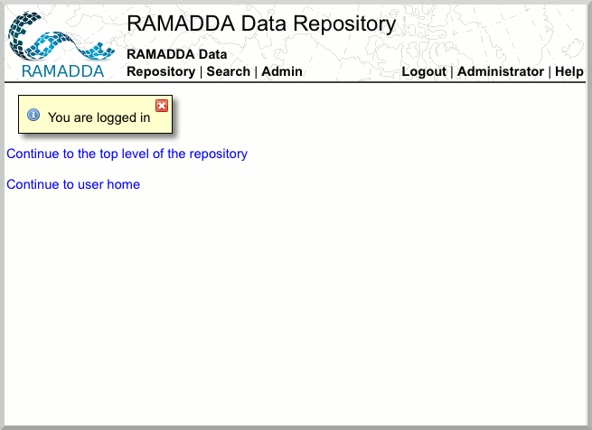

Creating the Admin Account
Once you have installed RAMADDA, you should be at this screen, and ready to set up the admin account.
- Click "Next".
- Read and accept the license agreement, and click "Next".

- You will now be prompted for admin credentials after which you will click "Initialize Server".
Be sure to leave "Install all plugins" checked.

- You should now be at this screen. Please login with your admin account.

You have now set up the RAMADDA admin account and you are ready to set up users and roles.
